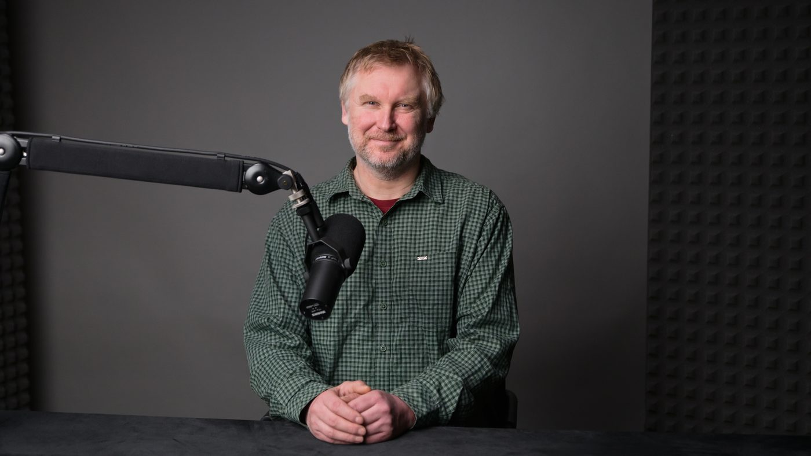
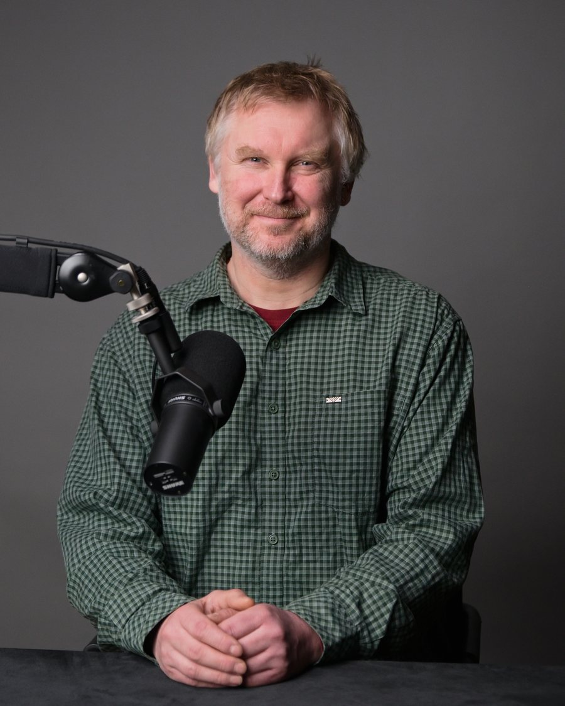
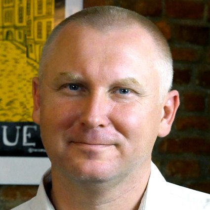
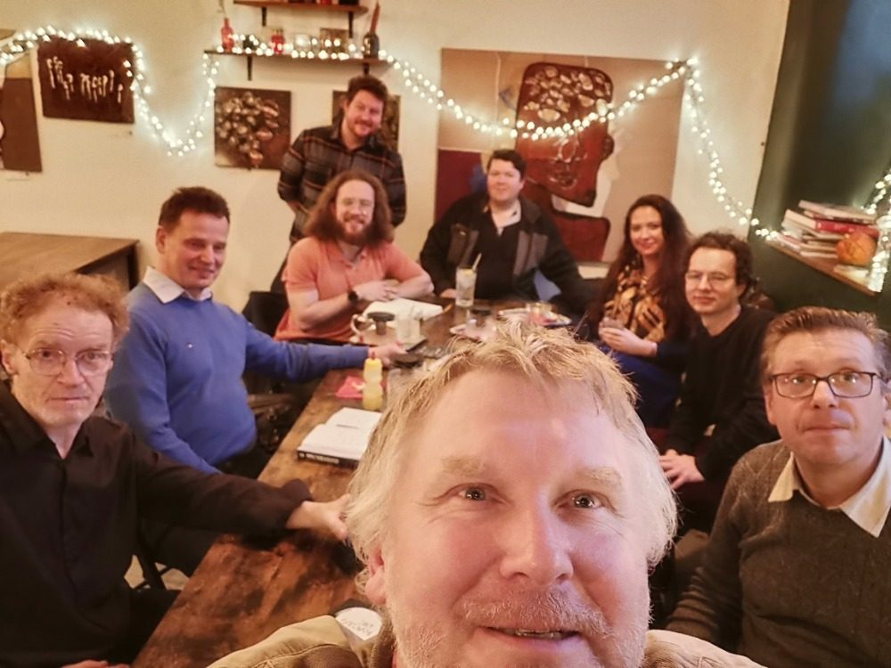
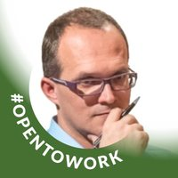
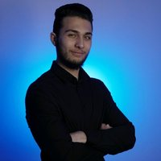
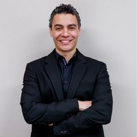
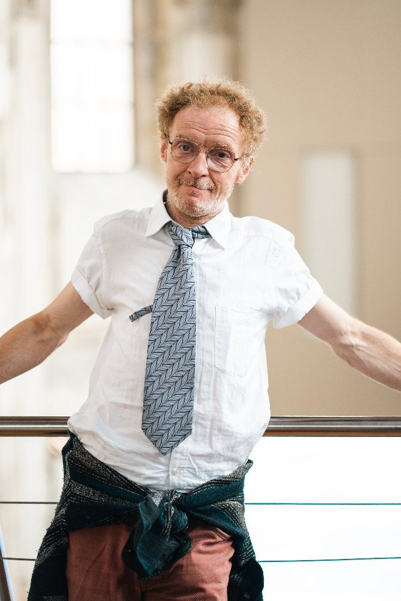
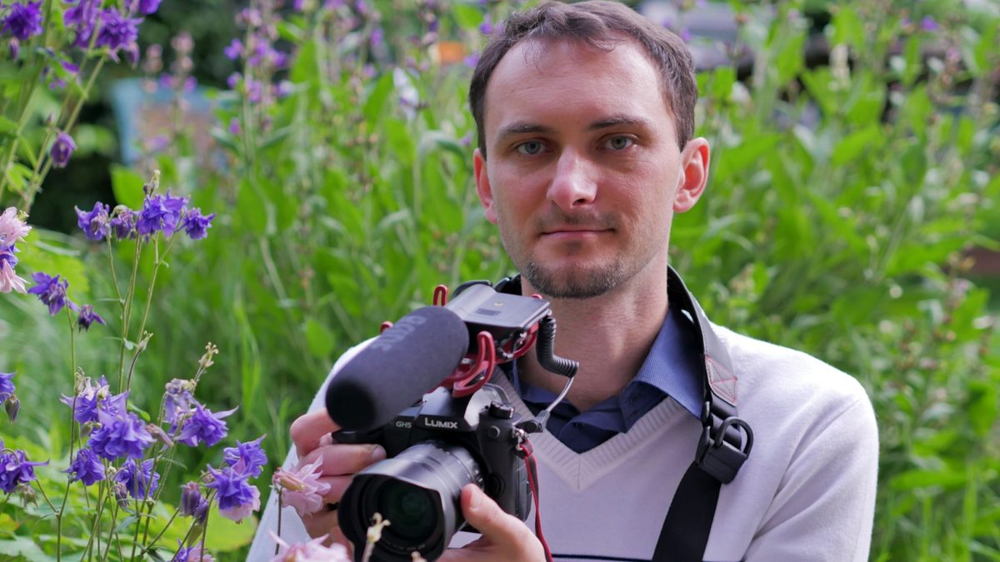
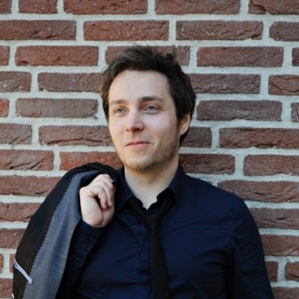

01
Angličtina pro podnikatele
Obchodní slovní zásoba, prezentace a sebejistota v mezinárodní komunikaci. Praktické lekce šité na míru vaší firmě.
online i naživo
Moderuju podcasty, vedu networkingové mastermindy a učím byznysovou angličtinu. Všechno pro majitele firem — online i naživo v Plzni a v Praze.

Pocházím z České republiky a živím se tím, že dávám lidem prostor mluvit. Nabízím podcasty, doporučuji a propojuji lidi, buduji komunity, pořádám networkingové mastermind akce, investuji jako angel investor a učím angličtinu.
Všechno pro majitele firem. Za pět let jsem odmoderoval přes 600 rozhovorů s osobnostmi z byznysu, kultury i vědy — a pokaždé šlo o totéž: udělat ze setkání příběh, který někam vede.

Každá služba běží ve dvou režimech — online odkudkoli, nebo naživo v Plzni a v Praze. Ceny obou najdete o kus níž.
Obchodní slovní zásoba, prezentace a sebejistota v mezinárodní komunikaci. Praktické lekce šité na míru vaší firmě.
online i naživoHodina, ve které se profesionálové vzájemně propojí, vymění nápady a odejdou s kontaktem, který skutečně potřebovali.
online i naživoRozhovor česky nebo anglicky. Natáčíme online, nebo přijedeme k vám do firmy, do obchodu i na veletrh.
online i naživoPřístup do skupin na LinkedIn, Slacku a Facebooku, workshopy s odborníky a kurz Business English na Slacku.
onlineVzkaz budoucím generacím. Nahrajeme vaši moudrost, příběhy a sny tak, aby zůstaly vašim blízkým napořád.
online i domaInvestuji do podnikatelů, kterým věřím — a otevírám jim síť kontaktů, kterou jsem za ta léta postavil.
po domluvěZoom, sluchátka, hodina času. Nejrychlejší způsob, jak začít — a nejlevnější způsob, jak zjistit, jestli si sedneme.
| Služba | Cena |
|---|---|
| Podcast (30 min) | 660 / 30 € |
| Networkingová událost (60 min) | 660 / 30 € |
| Konzultace (30 min) | 660 / 30 € |
| Memopoint | 660 / 27 € |
| Byznys komunita (3 měsíce) | 1 000 / 43 € |
| Kurz angličtiny nebo češtiny (měsíčně) | 2 000 / 80 € |
| Networking event na míru | 2 000 / 85 € |
| Roční členství — obsahuje vše výše | 4 000 / 170 € |
Přijedeme k vám s kamerou i mikrofonem, nebo se potkáme v Plzni a v Praze. Dražší, protože je to celý štáb a celý den — a taky proto, že si to pamatujete.
| Služba | Cena |
|---|---|
| Networkingová událost (60 min) | 1 000 |
| Konzultace (30 min) | 1 000 |
| Byznys komunita (3 měsíce) | 1 000 |
| Networking event na míru | 2 000 |
| Kurz angličtiny nebo češtiny (měsíčně) | 10 000 |
| Podcast (natáčení u vás) | 20 000 |
| Memopoint (natáčení doma) | 20 000 |
| Roční členství — obsahuje vše výše | 40 000 |
Malé skupiny, ve kterých se stihne mluvit každý. Přijďte se podívat — první setkání vás k ničemu dalšímu nezavazuje.

Sraz na vlakové zastávce Plzeň-Bolevec. Přátelská atmosféra, sdílení zkušeností, nápadů a nových kontaktů — v pohybu a na vzduchu.
Online setkání malé skupiny podnikatelů. Sdílíme, co právě řešíme, a odcházíme s konkrétními kontakty.
Stejný formát v angličtině. Skvělá příležitost potrénovat mezinárodní komunikaci naostro, ale v bezpečí.
Půlhodina o tom, co umělá inteligence právě teď mění v malých firmách. Česky i anglicky, online.
S Jirkou jsme měli několik koučovacích byznys konverzací v angličtině a byla to přinejmenším zajímavá zkušenost. Byznys konverzace v angličtině s Jirkou rozhodně doporučuji.

Jiřího online networkingová akce byla vedena v příjemné atmosféře. Jiří měl nad akcí plnou kontrolu a perfektně dokázal „zkorigovat“ konverzace zpátky k jádru propojování. Doporučuji.

Jiří je úžasný hostitel, skvělý podcaster a člověk, na kterého se můžete spolehnout při získávání cenných rad v podnikání. Je spolehlivý a skvěle se s ním spolupracuje.
Jiří Borč je zkušený podcaster s úžasnou schopností budovat komunity a pořádat akce plné zajímavých lidí. Plně podporuji jeho oddanost a vášeň pro práci a doporučuji jeho komunitní skupiny a podcasty jako zdroj učení.

Co mě na našem setkání opravdu zaujalo, bylo, že mi věnoval plnou pozornost a pečlivě si dělal poznámky. Je to upřímný člověk a snadno se s ním komunikuje. Velmi doporučuji se s ním propojit.
International Freelance Business je komunita nezávislých profesionálů. Tihle tři ji drží pohromadě se mnou.

Vede pražské aktivity IFB a vytváří zázemí pro freelancery. Zkušený pedagog a metodik s dlouholetou praxí na SŠ i VŠ, spoluautor maturitních úloh pro CERMAT.
zembryks@gmail.com
Natáčí akce, rozhovory a promo videa. Pracuje s kvalitní technikou a 2–4 kamerami, aby neuniklo nic podstatného. Výstupem je profesionálně sestříhané video.

Vášnivý cestovatel a expert na expanzi. Využívá svou globální síť k tomu, aby propojoval firmy s mezinárodními partnerstvími a příležitostmi k financování.
LinkedInSouhlas s ochranou osobních údajů (GDPR) i obchodní podmínky (VOP) jsou k dispozici na vyžádání.